The purpose of this lab is to introduce you to Packet Tracer, and learn its capabilities with respect to modeling real-world internet-connected home networks. Packet Tracer is a free application released by Cisco, in part to aid in studying for IT Certifications. It allows the users to model networks at a very high level, in a manner similar to what would be seen in the real world, spanning a wide range of hardware for a number of use cases. Additionally, much of the configuration work is also simulated on the devices, such as configuring hardware, attaching cables, and configuring settings through GUI and Command Line applications. One trade-off of the software is that it only supports Cisco hardware, and usually older revisions. Additionally, some occasional quirks and bugs exist in the emulated services and applications. However, the application makes an excellent introduction to network modelling to understand how a network is physically constructed, how data travels over networks, and network troubleshooting.
Lab 1: Introduction to Packet Tracer
ENSE 472 - Digital Networks - Laboratory
University of Regina - Engineering and Applied Science - Software Systems Engineering
Lab Instructor: Adam Tilson
Packet Tracer is available for Windows, Mac and Linux. However, the instructor will only be testing on Windows - please schedule a meeting or meet me after the pre-lab if you are having difficulties getting this working on your local machine.
If you are on MacOS, please see the tip linked at the bottom of this document if you experience problems with replacing hardware from the physical tab!
In order to use Packet Tracer, you will need an account with Cisco NetAcademy or SkillsForAll. This is free. If you are signing up today, sign up for Skills for All
To download and install the software, once you have an account, sign in and and navigate to Lab Downloads
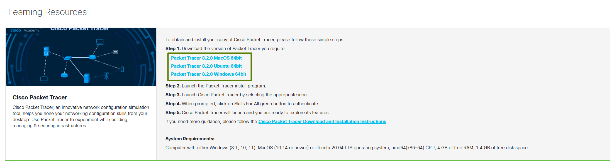
Upon starting Packet Tracer, you will need to sign in with your SkillsForAll or NetAcademy account.
This lab doc was created with version 8.0. The current version is 8.2, so there may be minor user interface differences, but nothing major.
What is Packet Tracer?
Network simulation software
- Emulates real world Cisco devices
- Simulates a network in action
Emulated Devices include
- End devices, such as PCs and Phones
- Intermediate devices, such as Switches and Routers
- Cabling
- Configuration for these devices matches real world situations
- you can virtually swap network cards, connect different types of cables to different ports, configure devices through applications or the command line as needed.
User Interface
The application defaults to the Logical View (representing the topologies by which devices are conected)
- Center stage is where you can drag and drop devices.
- You can select devices in the lower left:
1 Select the Broad category (End devices, Network devices, etc.)
2 Select the Fine category (Routers, Switches Hubs)
3 Choose a specific device
4 Drag and Drop or Click and Place on the center stage
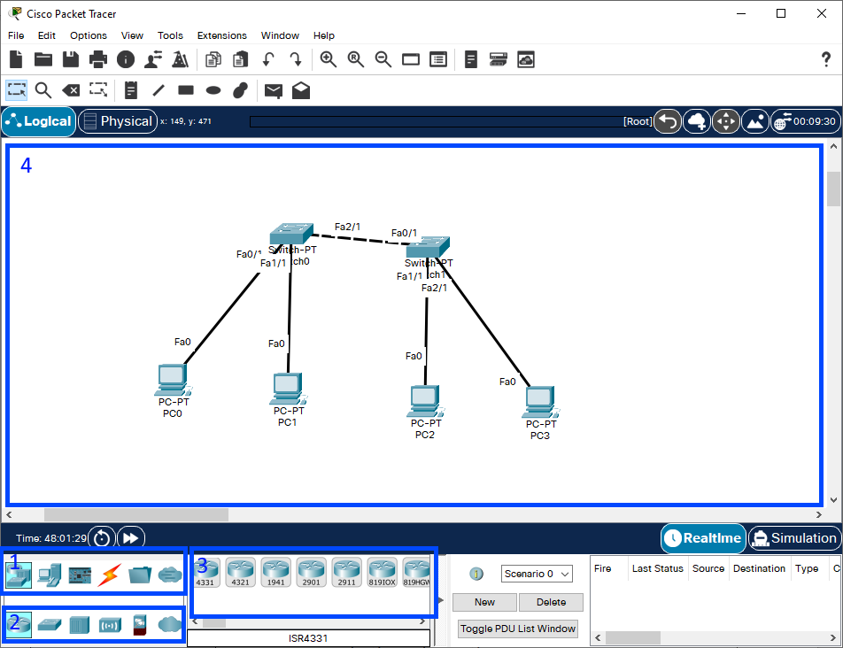
5 Commonly used tools are in the tool bar, such as draw or delete
6 You can switch between Logical (Topology) and Physical workflow here
7 You can switch between Realtime and Discrete Simulations here
8 You can group elements and set backgrounds here
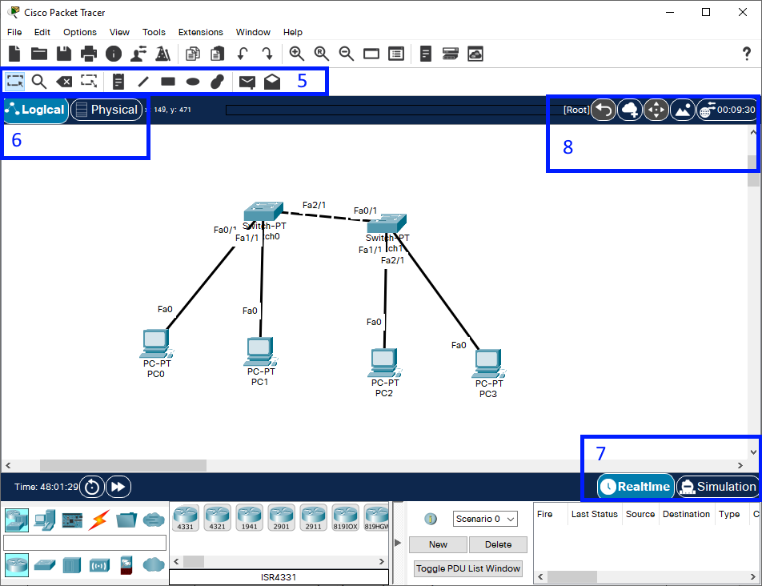
9 In Simulation mode, play controls can be found here
10 A summary of events can be found here
11 And details of the events can be found here
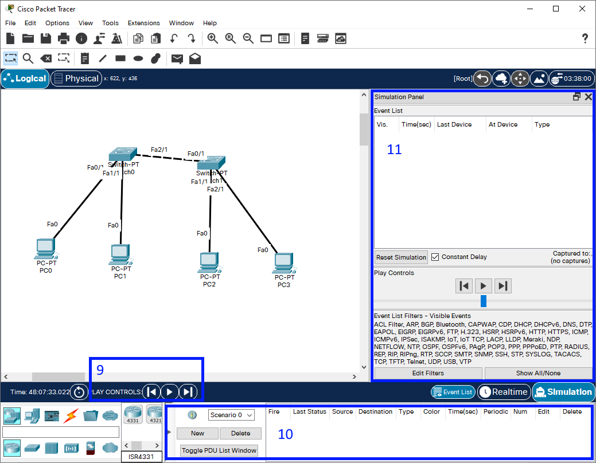
Logical vs. Physical View
Workspaces can be switched in the upper left, between the Logical and Physical view
- The logical view represents topologies, that is, simplified illustrations of how the devices are connected
- This does not necessarily match their placement in the real world
- Physical view, instead, represents the devices placement in the real world, in terms of office, city, or even country
- We’ll look at this more next week, this week will focus on the Logical View
Real-Time vs. Simualtion View
In real-time mode, communications occur instantaneously, or as quickly as the hardware will allow. If you would like to slow them down and view them step-by-step, switch to simulation mode
- We’ll look at simulating events further in the next week
Recall that the OSI 7-layer model for the Network communication was never physically achieved, instead the actual internet runs on a four-layer model:
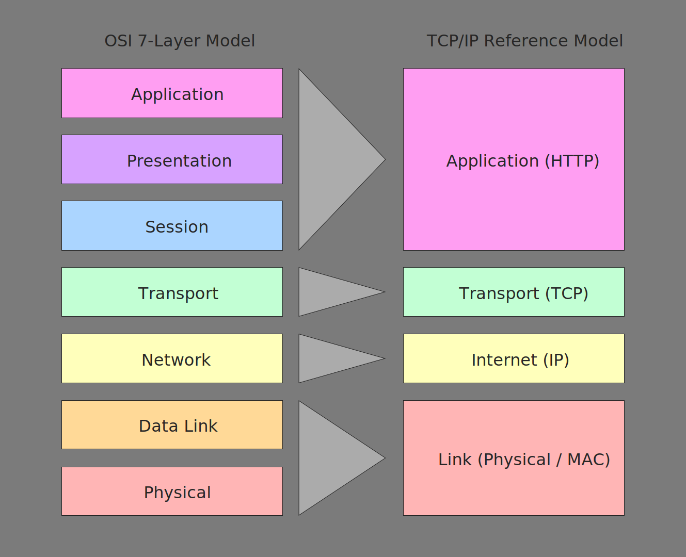
The simplest form of computer communication is using an ethernet crossover cable:

Data packets work through encapsulating the upper layers, e.g.


The headers contain important information for routing the packets including appropriate addresses and checksums:
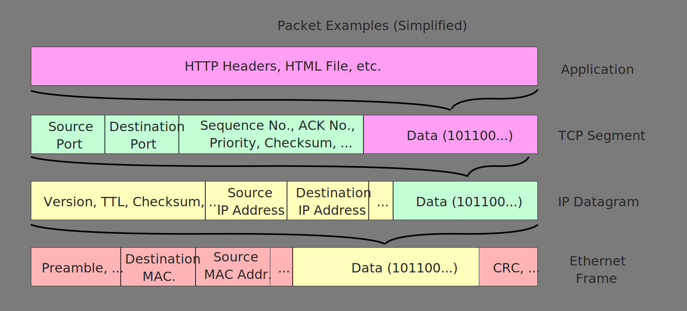
Using the layered structure, computers can reliably communicate. Intermediate devices have software support for specific layers, which enables them to inspect the data packet and route the packet to the appropriate address. For example, a Bridge (Switch) can route packets to the appropriate destination based on MAC address read from an ethernet frame, while a Router can route a packet to an IP Address based on an IP Datagram.
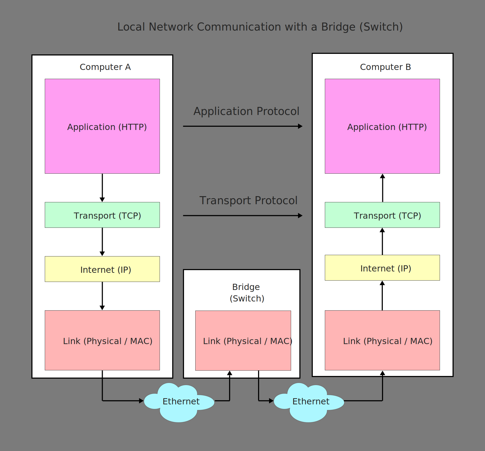

Placing Some Devices
Let’s begin by placing down a computer, a smartphone, a laptop and a wireless router.
- End Devices -> End Devices -> PC
- End Devices -> End Devices -> Laptop
- End Devices -> End Devices -> Smart Phone
- Network Devices -> Wireless Devices -> WRT300N Wireless Router
Let’s connect:
- The laptop to the router using Ethernet,
- The smartphone to the router using Wifi
- The desktop to the router using Wifi
Connections are found here:

There are many connection options. Simple ethernet is “Copper Straight-Through”. You will need to select the appropriate terminal on each end.
By defualt, on the cable you can see the network status. This serves the same purpose as the lights on ethernet ports on physical hardware. Note that it may take a few seconds for a connection to come up… If you are impatient you can fast forward the simulation!
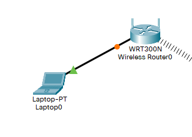
If a connection does not come up, then there is a configuration problem that needs to be addressed.
We have a problem - the Desktop has no wireless card! We can fix that by swapping out a card.
Configuring Devices
By clicking on a device, a tabbed window appears depending on the context of the device. Common Tabs include:
- Physical - What the device physically looks like. May contain swappable components, as well as a power button.
- Config - Allows setting some settings, however use of this tab is discouraged, as it does not simulate real world conditions. There is typically another preferred way to configure a device, such as through a command-line interface or a desktop application, though not always.
- Desktop - A list of applications which this device can run. For example, on a Desktop you would expect a Web Browser, Email and Terminal
- Services - Applications which are running the background, sometimes called daemons. These are important on servers.
- CLI (Command line interface) - Available on Cisco Routers, the CLI takes real-world commands to allow appropriate configuration
- Programming - Scripts which are running on this device, can be coded in Python, JavaScript or Visual (Block-based)
- Attributes - Some details about the device, such as MTBF, cost, power consumption, etc.
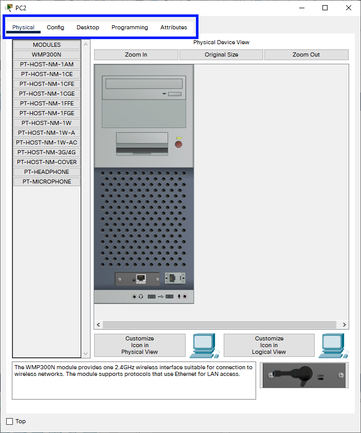
To swap out a card, we can use the physical tab.
- Turn off the device
- Drag the installed card to the list of cards on the left
- Drag the desired card into place
- Turn the device back on
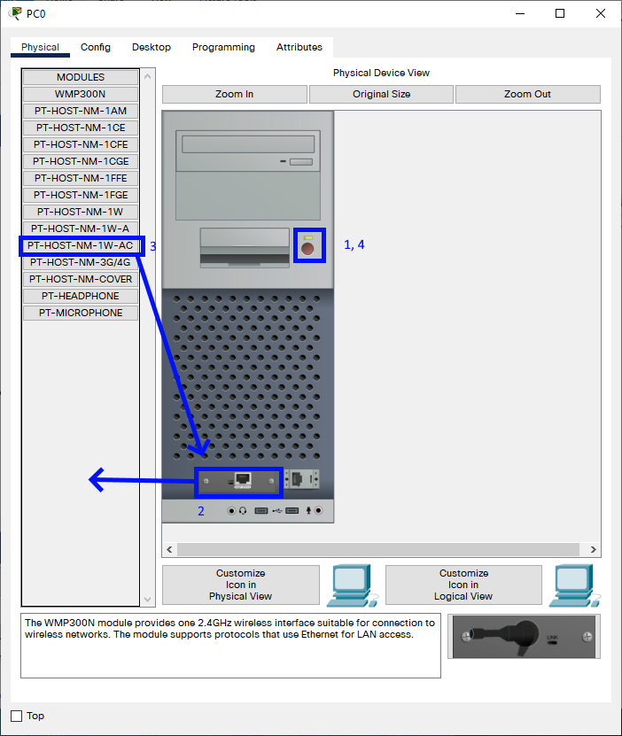
The device should connect automatically.
By default the Wireless Router has DHCP enabled, which means that IP Addresses may have automatically been assigned to the devices. You can confirm this by hovering your mouse over a device.
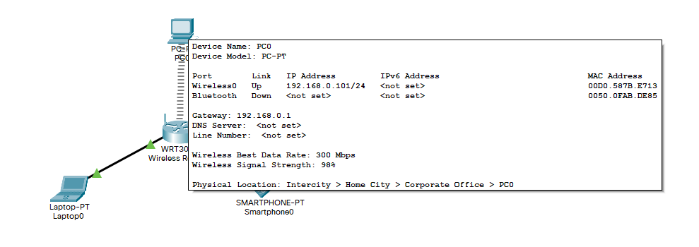
Additionally, the WiFi by default has no security enabled. It would be preferable to password protect entry to the wireless, which can be configured in the GUI tab for home wireless routers, or the config tab if that menu is not available for the given device.
Unfortunately, our laptop did not recieve an address. DHCP is off. We can correct this by setting it to use DHCP.
- Click on the Laptop
- Click on the Desktop tab
- Click on the IP Configuration Utility
- Set the IP Mode to DHCP
- Close the window, then hover over the Laptop again to see that it has recieved an IP Address.
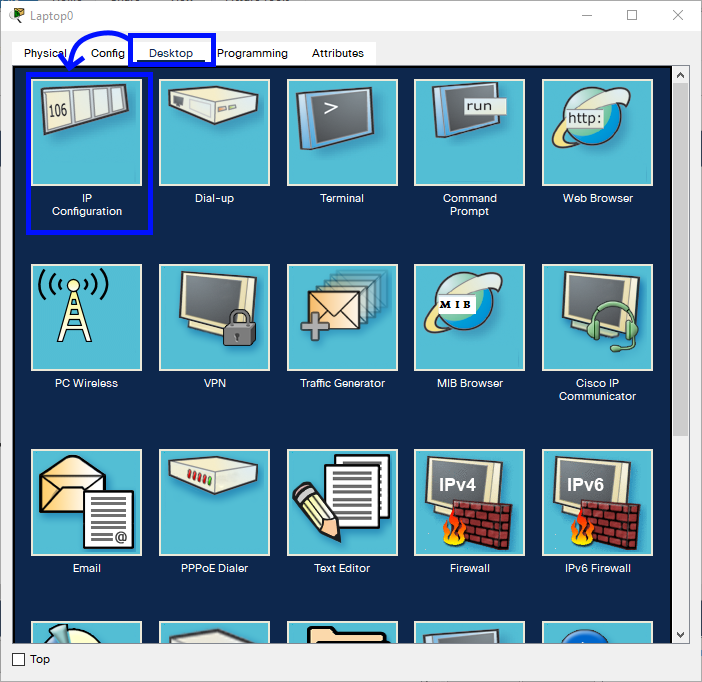
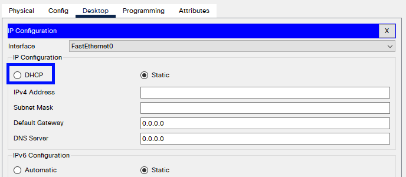
Finally, we can test connectivity on our simple network using the ping utility
- Hover over a device and take note of its IP address, e.g. 192.168.0.100
- Click on a different device, and click into the Desktop tab
- Open up the Command Line application
- This application emulates the Windows Command Line, but only contains a subset of functions for testing network connectivity
- Ping the address, eg.
ping 192.168.0.100 - You should see four replies. Ensure you can ping all of the connected devices. You should also be able to ping the router at 192.168.0.1. This is known as a
gateway address, as it is the gateway into and out of the network.
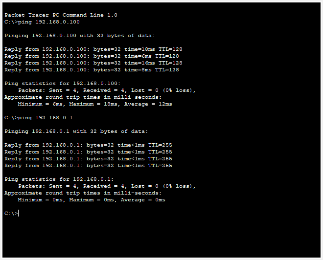
Let’s try instead connecting a client to a server over a switch.
Let’s add a switch, a PC and a server and connect them.
Unlike a router, a switch is a link-layer device. It doesn’t understand IP addresses, only MAC. We must assign IP addresses manually. Let’s add some labels to our devices so that we know our plan.
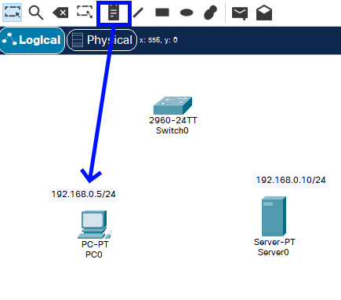
Recall: The /24 refers to the subnet. Recall, this corresponds with the subnet mask: 255.255.255.0
Let’s assign these in the Device -> Desktop -> IP Configuration, and set the IPs as static
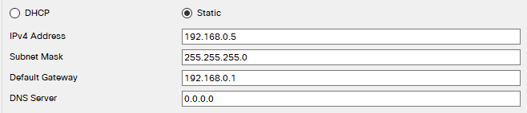
We won’t have a gateway in this network. We’ll set the DNS later.
Let’s see which services the server can run. Open up the services tab.
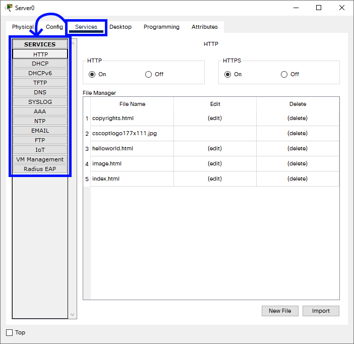
By default the HTTP / HTTPS service is running, and is hosting a number of web pages.
Let’s head back to the PC, and attempt to access the web page using the web browser application.
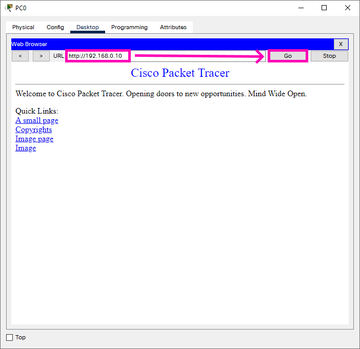
We can also change the HTML as well on the server side.
Accessing our website by IP address is not ideal, so let’s add another server to act as DNS. Be sure to add its static IP address in the configuration as well!
Add the DNS Server
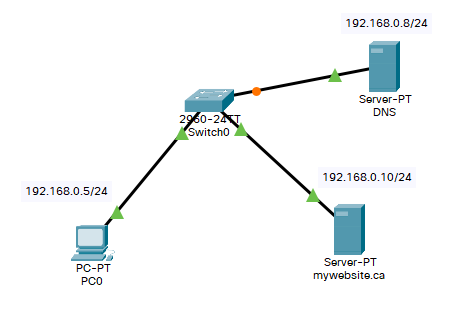
Let’s head into our DNS Server’s services, enable DNA, and add an A record to our DNS. A records link domain names to the respective IP Addresses.
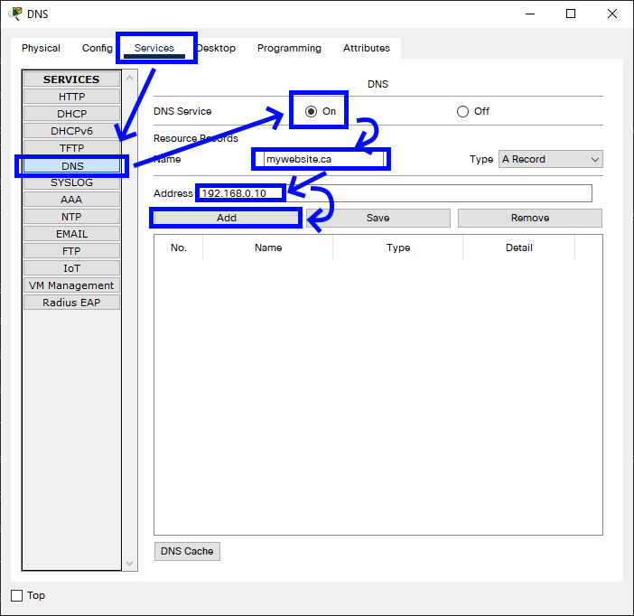
We need to head back to our PC, and ensure it knows the IP address of the DNS server. (PC->Desktop->IP Configuration->DNS)
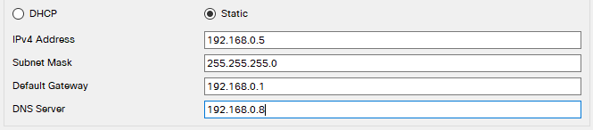
Now we should be able use the PC’s browser to access our website by domain name rather than IP address
- If we removed the Switch, and connected the client directly to the sever using a Crossover cable, would we still be able to access the website? Why or why not?
Next, let’s attempt to model how a computer connects to the internet using an ISP. (WAN)
Drop in the following elements:
- A PC
- A Cable Modem
- A PT Cloud (Empty)
- A Router
- A Server
To delineate different networks, we can draw rectanges and add labels to show which devices are located where…
This way we show shich servers are located in the local network, in the internet service provieder (ISP) and the remote network, which for simplicity we will call the internet. Note that this model is extremley simplified.
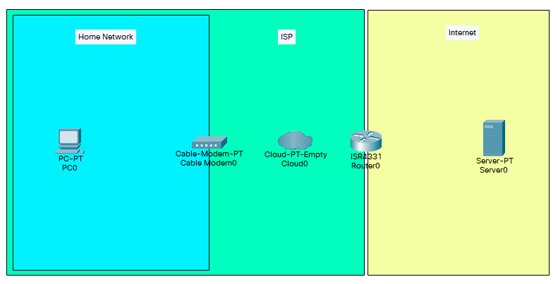
The PT-Cloud is used to represent one or more devices with different connections. It can be set to simply relay frames across. In this case we’ll configure it to relay across ethernet frames over DSL.
First add an ethernet and a coaxial card.
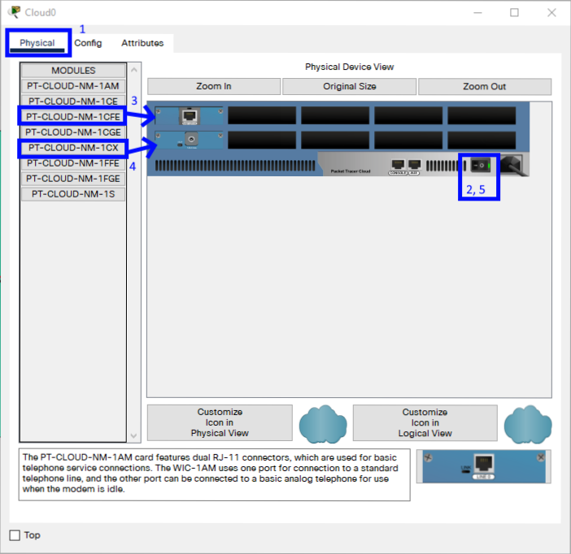
Next we can configure the cloud to work on the cable communication…
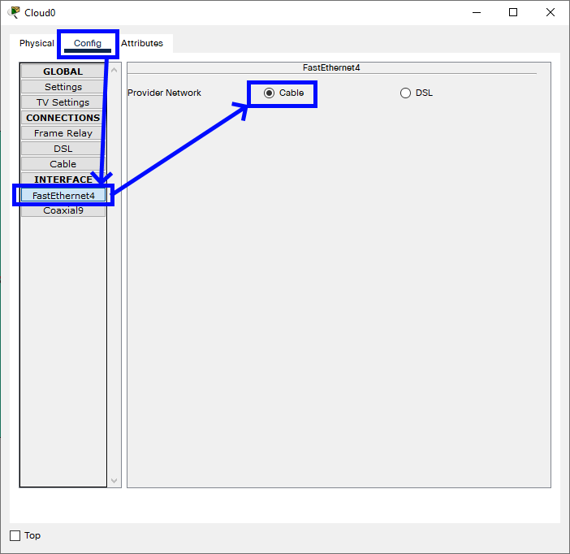
And finally, set it to relay data across this network…
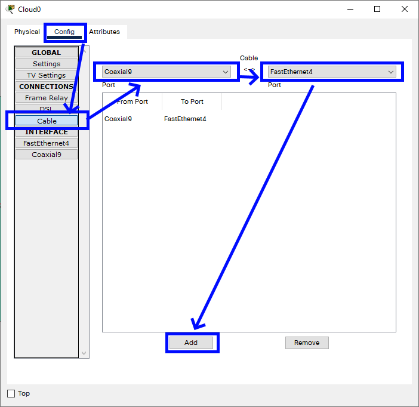
Connect the cables across the network. Mostly they connect with copper straight through, but you will need to use a coaxial cable from the cable modem to the cloud, and a crossover cable from the router to the server, as we have ommitted a switch in this branch for simplicity.
Now we need to set some network IP addresses.
Let’s set our PC to: IP / Subnet: 192.168.0.10/24 Gateway: 192.168.0.1
And our server to: Ip / Subnet: 10.0.0.20/8 Gateway: 10.0.0.1
Recall, we can set these in the Desktop -> Ip Configuration Application for each end device.
The gateway refers to the IP address of the device which connects this network to the adjacent one, and is thus the gateway to the world. This is the router. So the router needs to be configured as the gateway to the left and right networks. We’ll start by labeling it as such…
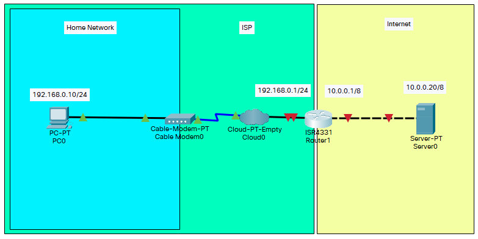
We can configure these through the CLI interface for the router. Take note of which interface each network is connected to, you do this by hovering your mouse over the ‘down’ arrow on each side of the network.
Click on the router and run the following commands.
Type in the following
At the automatically configure prompt, type:
no
Now switch to administration mode:
enable
Now switch to configuration mode:
configure terminal
We want to assign a gateway IP to each of the interfaces.
Enter configure mode for the first interface. This should be the interface connected to the home network.
interface gigabitEthernet 0/0/0
Assign an IP address:
ip address 192.168.0.1 255.255.255.0
Bring the interface online:
no shutdown
And stop configuring this interface
exit
Next we wish to configure the second interface, this time the server side:
interface gigabitEthernet 0/0/1
ip address 10.0.0.1 255.0.0.0
no shutdown
exit
Leave configuration mode
exit
save this as the starting configuration
copy running-config startup-config
<enter>
We’ll dig into the Command Line interface more in the next lab, this should be enough to get you through this lab.
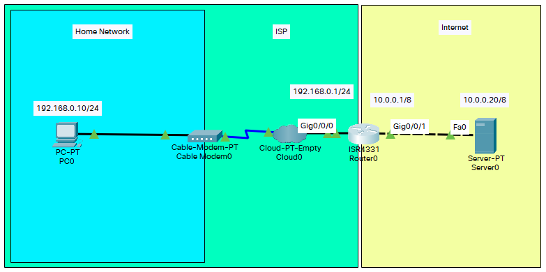
Finally, our network should be complete. Test it using the appropriate methods.
Let’s end with a simple IoT server.
The Home Gateway is a Router which also hosts an IoT Server App. Appliances can register with this application for control. Devices can also access this application to control the connected appliances.
- Add the following:
- Network Devices -> Wireless Devices -> Home Gateway
- End Devices -> End Devices -> SmartPhone
- End Devices -> Home -> Fan
- Make sure both the SmartPhone and Fan connect to the GateWay
- Config -> Wireless0 -> SSID ->
HomeGateway
- Config -> Wireless0 -> SSID ->
- Make sure the fan registers on the Home Gateway IoT Server
- Fan -> Config -> Settings -> IoT Server -> Home Gateway
- Log in the Home Gateway through the Smartphone’s Browser
- Type in the HomeGateway’s LAN IP address
- 192.168.25.1
- default login info is username:
admin, passwordadmin
- Turn the fan to Off, Low or High using the app!
IoT devices can also be also run from remote servers. Can you figure out how? This is part of the Lab Assignment.
- Hints:
- Make sure the appropriate service is running on the server
- Make sure the IoT device can access that server, e.g. through the internet
- From a computer browser, navigate to and register an account with that server
- Configure the IoT device to use the service on the remote Server rather than the local gateway, providing appropriate login details, and connect. If it worked, the button will change to
refresh. - Control devices through the server using the IoT monitor app or the web browser
For this lab, you are to implement a model of home network which is connected to servers on internet through an ISP.
To complete this lab, perform the following tasks:
- Find a house image on the internet and use it as a background (You can set a background from the tools in the upper right.)
- Place on top of it the following end devices:
- Desktop
- Smartphone
- Laptop
- Smart Door
- Connect each of these to a
Home Router. The Desktop should be connected with ethernet, and the laptop and smartphone with wifi. The IoT appliances can connect with Wifi. The SSID forHome RouterisDefault.- The Home Router should assign IP addresses automatically using DHCP in the 192.168.0.x range.
- The Home Router should connect to the ISP with a cable modem. Assign an appropriate static IP address to the home router on the ISP (internet) side. Hint: this must be different than the LAN address (192.168.0.x/24). You could use, for example (172.16.x.x/16), or (192.16.1.x/24)
- Represent the ISP with a PT-Cloud and a Router, and connect the Cable modem
- Represent servers on the internet with a series of servers connected to a switch, with statically assigned IPs on the same network.
- Create one server which hosts a website,
uregina.ca - Create a server which provides remote IoT registration, identified by
myiot.com - Create a DNS server which properly resolves
uregina.caandmyiot.com- Ensure all devices know about the DNS server, whether static or through DHCP!
- Connect the switch to the ISP Router
- Ensure traffic flows over the ISP. You will need to further configure the router.
- Ensure the appropriate devices know about the gateway address(es)!
- When you believe the network is connected properly, ensure you can:
- Access the server’s website from the desktop, by URL (not IP address)
- Access the Door from the remote server
- Correctly label each network, computer and gateway with the appropriate IP address and subnet
- Using the rectangle tool and label tool, box off and label the areas of the network topology that represent the Home Network, ISP and Remote Network. Place devices which connect between these network on the edge of the boundary.
And you’re done! You have a complete working model of the internet! (Or at least a tiny slice!)
Submission
Please submit your Packet Tracer file (.pkt) to URCourses by the deadline.
Packet Tracer Quirks / Help
How many total networks are needed
- There will be 3, one in the home (assigned through DHCP), one in the ISP (assigned manually), and one for the servers (assigned manually).
How do I configure the Home Router
- Through the GUI, which is akin to what you would see if you logged into the router: 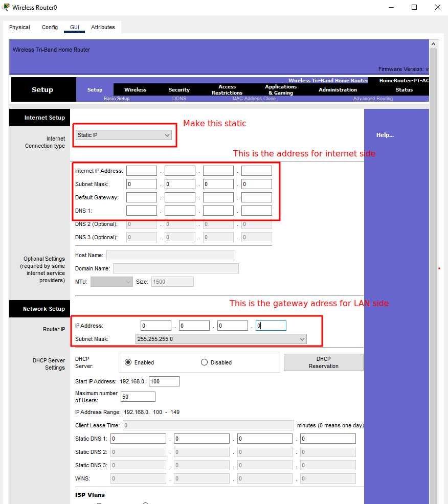
On Mac, after saving files, sometimes swapping modules breaks
- Try the advice in this link
- From terminal, navigate to the Cisco Packet Tracer 8 Directory
umask 011umask -S
Old Assignment, for reference only
1. Find a house image on the internete and use it as a background (You can set a background from the tools in the upper right.)
2. Place on top of it the following end devices:
- Desktop
- Smartphone
- Laptop
- Smart Door
- Smart Thermostat
3. Connect each of these to a Home Gateway. The Desktop should be connected with ethernet, and the laptop and smartphone with wifi. The IoT appliances can connect with Wifi.
- The Home Gateway should assign IP addresses using DHCP.
4. The home gateway should connect to the ISP with a cable modem
5. Represent the ISP with a PT Cloud and a Router, and connect the Cable modem
6. Represent servers on the internet with a series of servers connected to a switch, with statically assigned IPs on the same network.
7. Create one server which hosts a website, `uregina.ca`
8. Create a server which provides remote IoT registration, identified by `myiot.com`
9. Create a DNS server which properly resolves `uregina.ca` and `myiot.com`
- Ensure the appropriate devices know about the DNS server address! (The Home Gateway)
10. Connect the switch to the ISP
11. Ensure traffic flows over the ISP. You will need to further configure the router.
- Ensure the appropriate devices know about the gateway address(es)!
12. When you believe the network is connected properly, ensure you can:
- Access the server's website from the desktop, by URL (not IP address)
- Access the Thermostat from the local IoT gateway
- Access the Door from the remote server
13. Correctly label each network, computer and gateway with the appropriate IP address and subnet
14. Using the rectangle tool and label tool, box off and label the areas of the network topology that represent the Home Network, ISP and Remote Network. Place devices which connect between these network on the edge of the boundary.